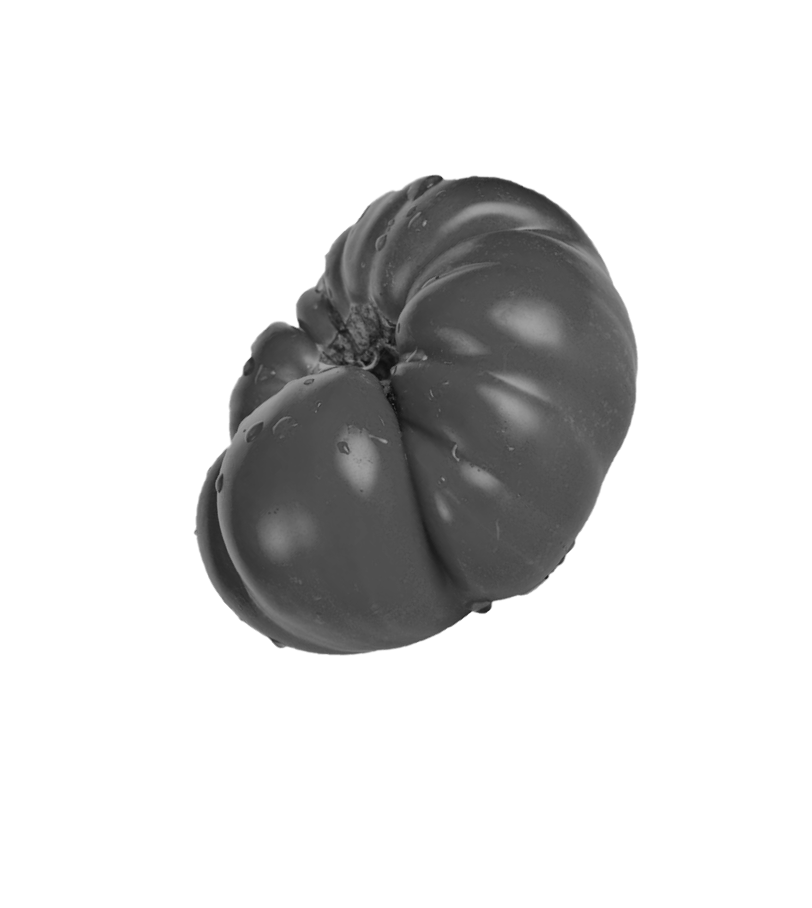
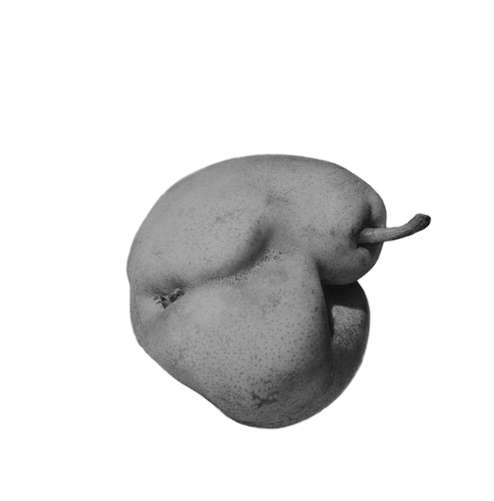

p
n
WHAT IS THE
PROBLEM?
전 세계에서
매년 생산되는
식량 중 무려
에 해당하는
13억 톤의 농작물이
못생겼다는 이유만으로
버려지고 있다
돈으로 환산하면
$
(약 466조 원)
폐수나 플라스틱도 아니고
폐농산물 정도는 그냥 버려도 되는거 아닐까?
 
농산물에는 수분이 많이 함유되어 있기 때문에 시간이
조금만 지나도 악취가 발생하며 썩는 과정에서 메탄가스도 발생한다.
땅에 매립되어 썩는 농산물들은 고농도 폐수를 생성하기 때문에
토지는 물론 수질 자원까지 오염시킨다. 이로 인해 토지가 병들고
주변에 서식하는 동식물의 서식까지 파괴된다. 특히 농산물의 폐기는
세계 식량부족 문제를 심화시키는 결과로 이어진다.